BTW 应该只留下问题、回答和当下可用的操作。
Production 验证结论：在不 fork Pi、不修改共享 Command Dialog、也不使用浮动窗口的前提下，已经实现 Claude Code 式的简洁信息结构。右栏是实际 production BTW 在真实 Pi 0.83 / Bun 1.3.14 TUI 中的捕获，不是浏览器里的 GUI mock。
保留
- Pi Stuff 的全宽、非浮动 Command Dialog 和 Suite 抢占 / 恢复行为
- Pi 主题、原生 Answering spinner、Markdown 渲染
/btw <question>、选中 answer、随状态变化的快捷键提示
删除
BTW、Question、Answer等重复标题single exchange、side question · main task continues等解释性文案- 圆点式历史列表和“earlier exchange”说明；历史改成紧凑的
/btw行
100×32 · 同一状态横向对照
Answering

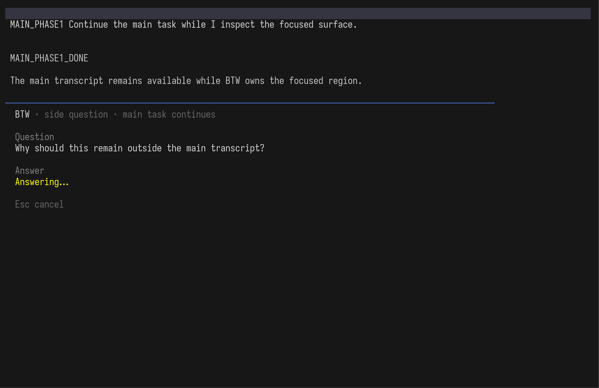
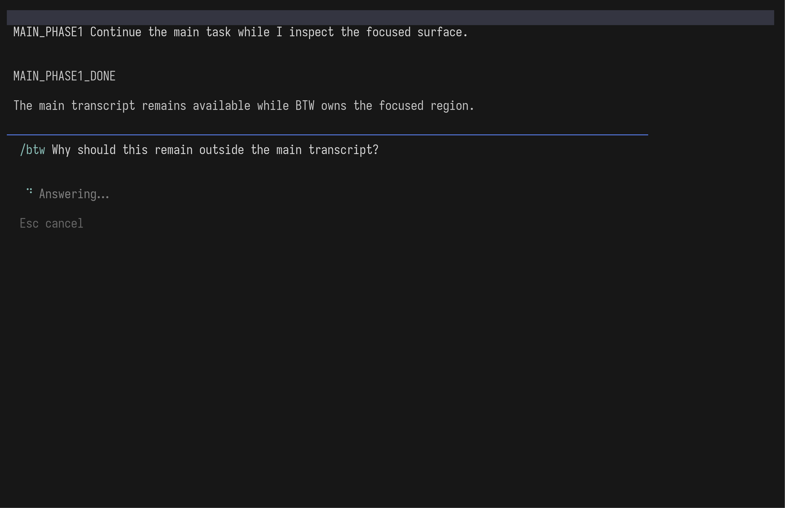
Answered

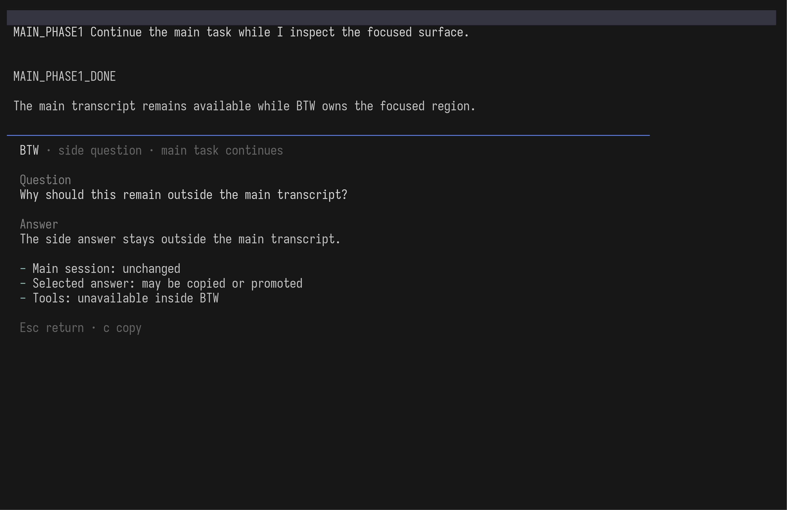
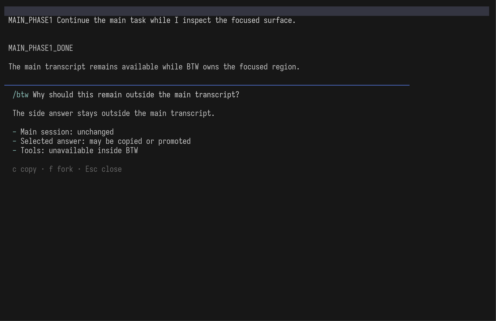
History

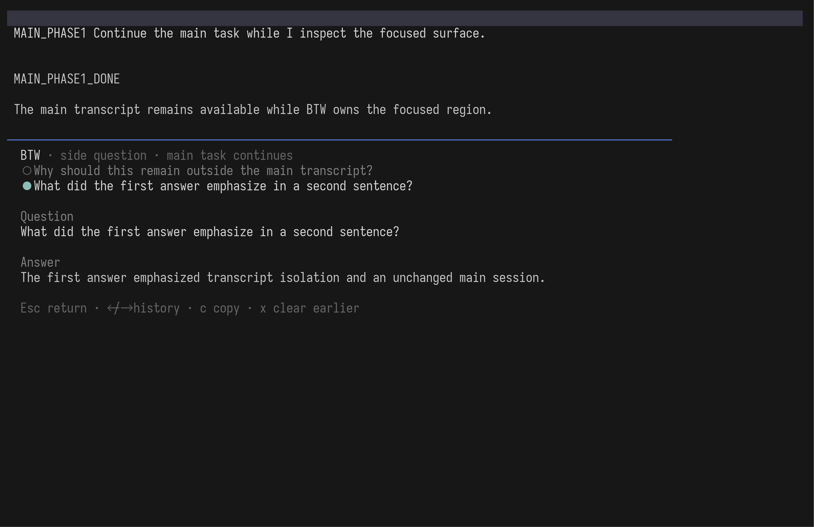
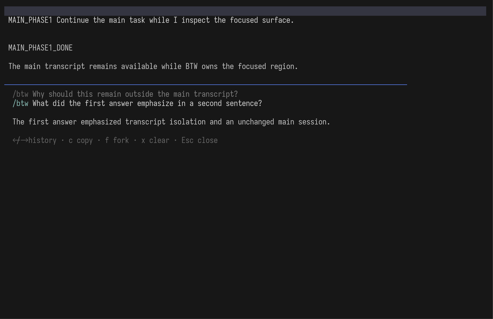
64×28 · 窄终端验证
Current · answering / answered / history
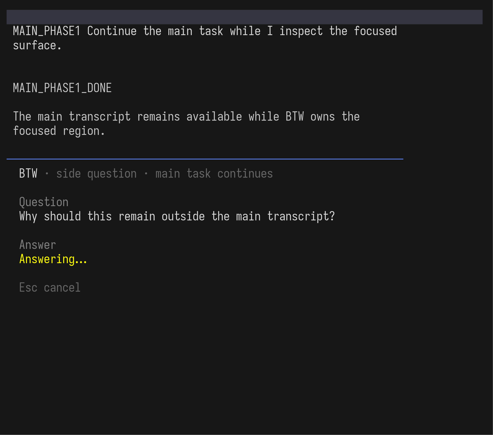
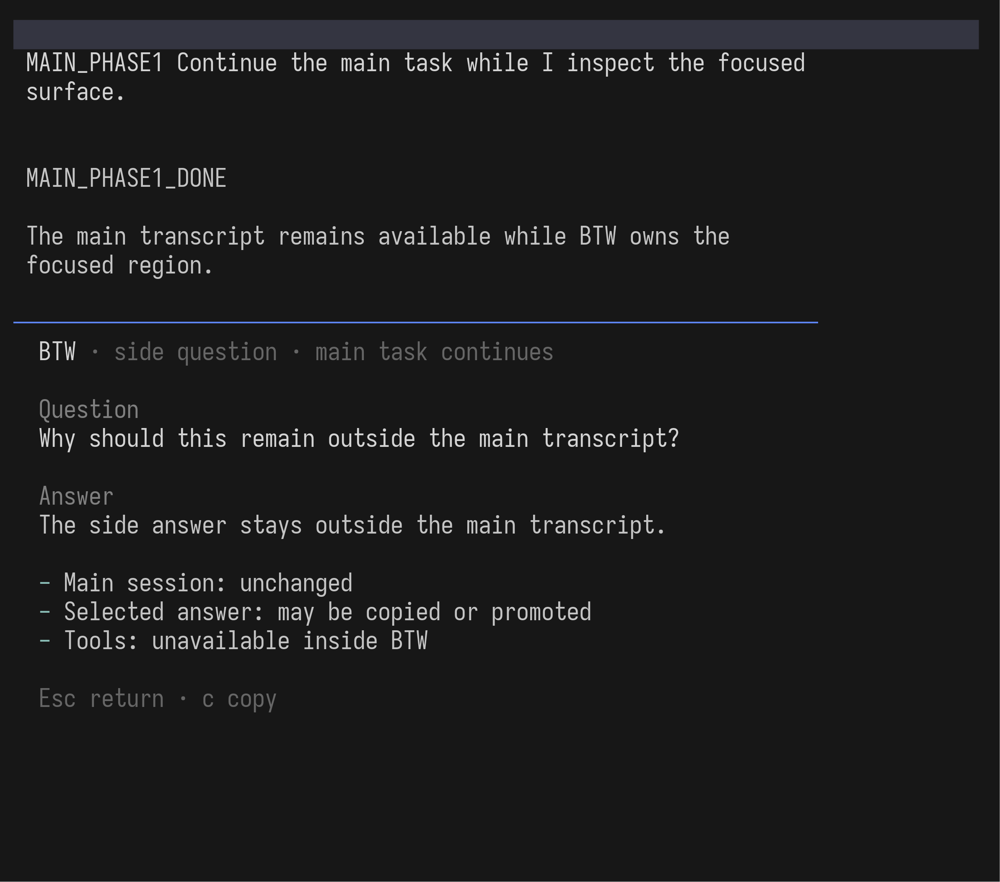
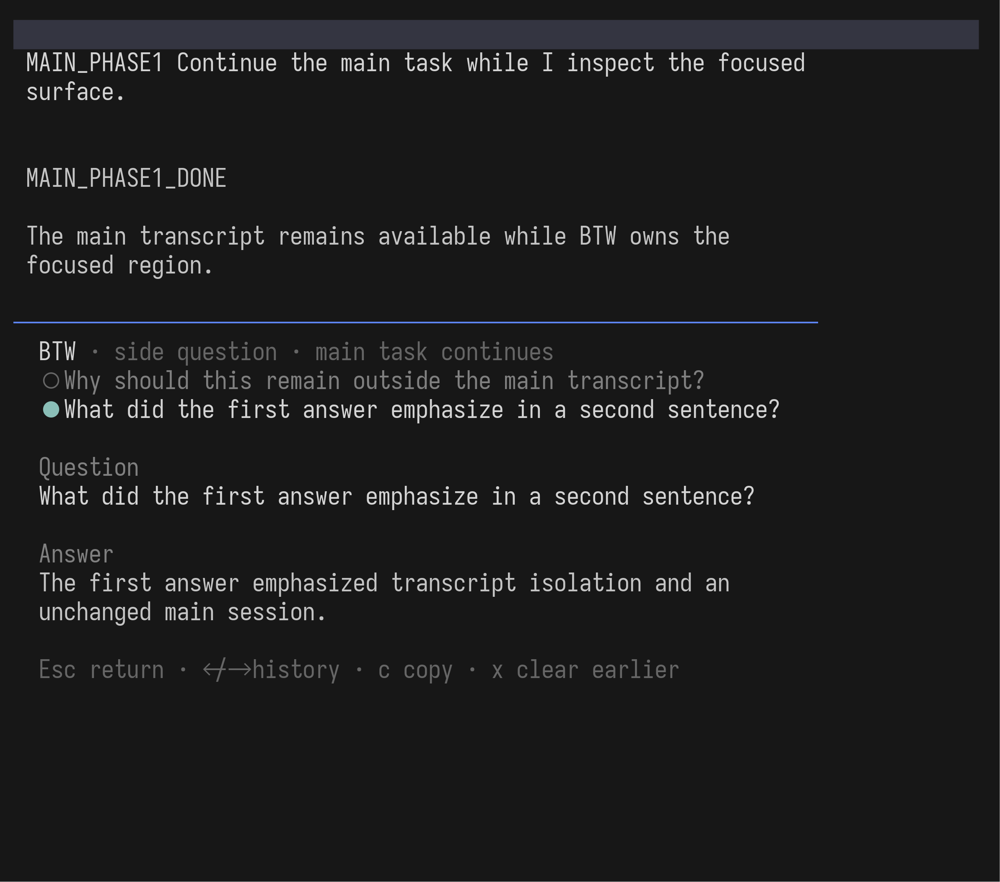
Production · answering / answered / history
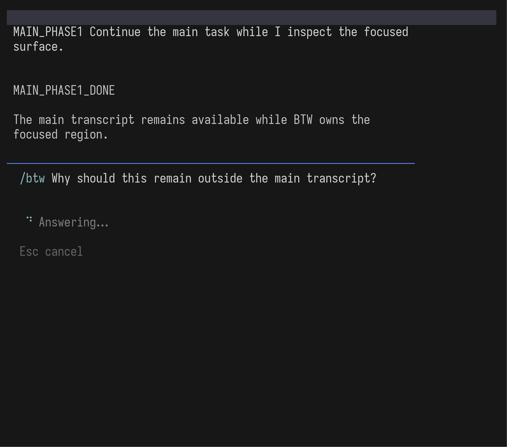
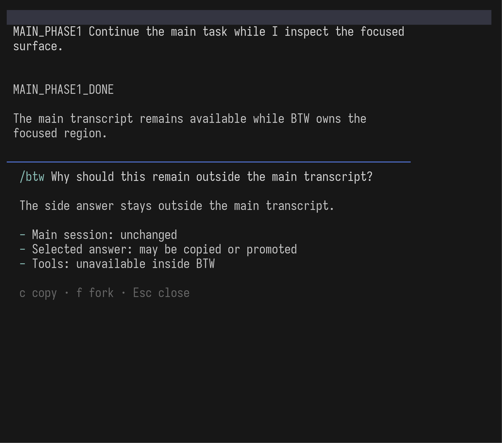
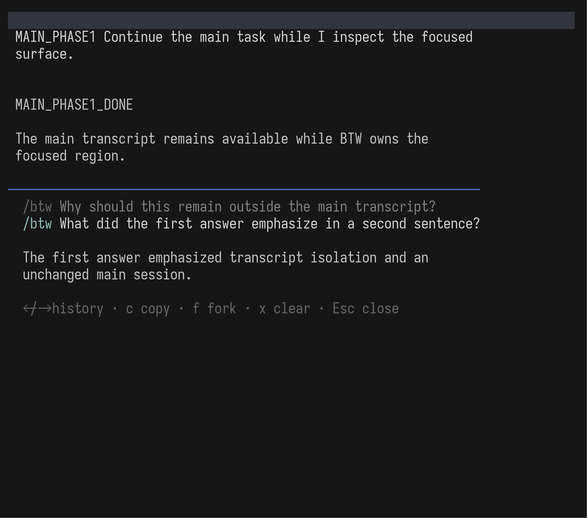
Phase 2 行为契约
- Context
- 可见已完成的文字、图片、tool results 和 compaction context；看不见尚未完成的 assistant partial。
- History
- 跟随原 session 本地持久化；resume 保留；
/clear和普通 branch 不继承；只在异常巨大时淘汰最旧记录。 - Promotion · f
- 等待 main Agent idle，再把选中 Q/A 作为正式 turns 打开到一个新 session；原 session 不变。
- Keys
- history、copy、clear、
f、Space、Enter、Esc；提示只显示当前状态确实可用的操作。 - Boundary
- 未知边缘行为保守处理；Pi 0.83 缺少的 Host seam 单独跟踪，不 fork Pi，也不削弱 BTW 的 transcript isolation。
Claude frames 是 genuine 2.1.220 binary capture，仅作为已发布行为和信息层级依据；未复制 Claude 代码或像素。Current 与 Production frames 来自同一套可复现的真实 Pi PTY harness。这个 HTML 只负责并排查看证据，不是 UI 实现。